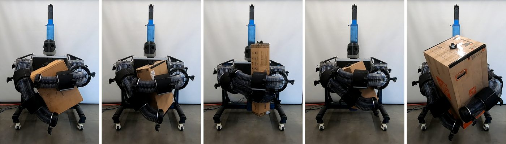

About the project
Soft robots are well suited to whole-body manipulation because their compliance makes contact forgiving, but that same softness makes them hard to model and control. The lab's original work, by Johnson, Alessi, Falotico, and Killpack, trained a reinforcement-learning policy entirely in a fast MuJoCo simulation, guided by a simple grasping motion primitive, and transferred it straight to hardware: 88% success lifting boxes of up to ~10 kg with no fine-tuning.

My role In progress
I joined in September 2026 to contribute to the revised paper:
- Developing the evaluation methodology for comparing the RL policy against PID and MPC baselines
- Testing and tuning the MPC controller and its cost function in 1, 3, and 6 DOF scenarios
Figures courtesy of the paper's authors, BYU Robotics & Dynamics Lab.